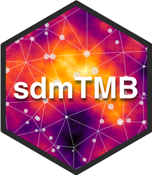

Spatiotemporal Modelling for Index Standardization with VAST and sdmTMB 🐟


This repository contains the pedagogical materials, scripts, and resources for the intensive workshop on spatiotemporal modelling applied to the standardization of fisheries abundance indices.
🗓️ General Information
- Dates: May 4 – 8, 2026
- Hours: 08:30 – 16:00 (ADT/CDT)
- Venue: Harry Hachey Conference Center, Saint Andrews Biological Station (SABS)
- Instructor: Dr. Sosthene AKIA (Research Scientist, DFO)
🎯 Workshop Overview
This interactive workshop is designed to empower fisheries scientists and analysts to master the R packages VAST, sdmTMB, and tinyVAST. The curriculum is highly practical, featuring real-world applications on Western Atlantic Bluefin Tuna (ABFT) and providing dedicated sessions for participants to work on their own datasets.
Key Themes:
- Index Standardization: Isolating biological signals from “noise” (vessel effects, gear variability, and environmental drivers).
- Spatial Statistics: Mastering Gaussian Random Fields and the SPDE approach (meshing/triangulation).
- Spatiotemporal Modelling: Integrating spatial and temporal dimensions for robust abundance predictions.
- Technical Reconciliation: Leveraging
tinyVASTas a bridge between the flexibility ofsdmTMBand the multivariate power ofVAST.
📅 Course Schedule
| Day | Theme | Primary Objective |
|---|---|---|
| Monday | Foundations & Spatial autocorrelation | GLMM/GAMM review and introduction to spatial autocorrelation. |
| Tuesday | Spatiotemporal Fusion and modelling | Creating dynamic maps and modelling temporal evolution. |
| Wednesday | VAST Deep Dive and demo | Advanced configuration: fit_model, FieldConfig, and Anisotropy. |
| Thursday | sdmTMB Deep Dive and demo | Advanced diagnostics, cross-validation, and spatially varying coefficients. |
| Friday | tinyVAST & BYOP - demo | Framework reconciliation and individual coaching on your data (BYOP). |
💻 System Setup (Prework)
Before the workshop begins, please ensure your computing environment is ready: 1. R (>= 4.4.0) and RStudio installed. 2. A functional C++ toolchain (Rtools for Windows or Xcode for macOS). 3. Installation of core packages: r install.packages(c("devtools", "sdmTMB", "DHARMa", "sf", "terra", "fmesher")) devtools::install_github("James-Thorson-NOAA/VAST") devtools::install_github("James-Thorson-NOAA/tinyVAST")
👉 For detailed, step-by-step instructions, visit the: System Setup Page.
🧑🏫 About the Instructor
Dr. Sosthene AKIA is a Research Scientist at Fisheries and Oceans Canada (DFO). Specializing in hierarchical and spatiotemporal modelling, his work focuses on developing unbiased index standardization methods for large-scale monitoring programs and stock assessments. He is also the founder of Stat4research.
📄 License
This work is licensed under a Creative Commons Attribution 4.0 International License.